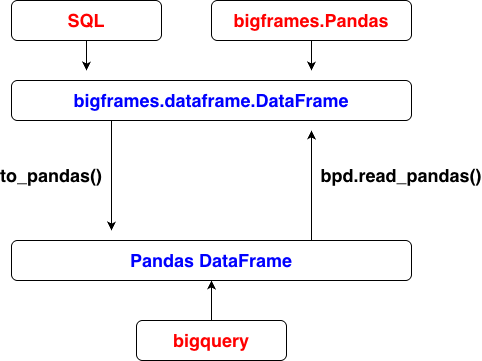
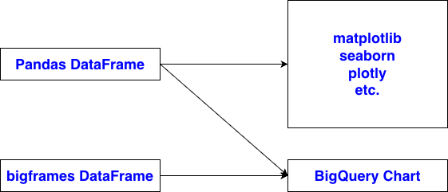

# query data with SQL
# save as a bigframes.dataframe.DataFrame
select *
from mydataset.housing_gcs_native
where ocean_proximity = 'ISLAND';
# query data with bigquery in Python
from google.cloud import bigquery
client = bigquery.Client()
query = """
SELECT *
FROM mydataset.housing_gcs_native
"""
df = client.query(query).to_dataframe(create_bqstorage_client=True) # Pandas DataFrame
# query data with bigframes.pandas in Python
import bigframes.pandas as bpd
df = bpd.read_gbq("SELECT * FROM mydataset.housing_gcs_native") # bigframes.dataframe.DataFrame
# load data from local directory which is the temporary space of the notebook
import pandas as pd
df = pd.read_csv("/home/housing.csv") # Pandas DataFrame

import pandas as pd
import bigframes.pandas as bpd
pd_df = bf_df.to_pandas() # bigframes DataFrame to pandas DataFrame
bf_df = bpd.read_pandas(pd_df) # pandas DataFrame to bigframes DataFrame

# Linux commands
%%sh
ls
!ls
ls
# Python script
%%python
print('Hello World!')
# HTML
%%html
<h3>Hello</h3>
# measure execution time
%%timeit
sum(range(1000000))
# Writes the entire cell content to a file
%%writefile my_script.py
print("Hello world")
# string
text_value = "hello" # @param {type:"string"}
# integer
num = 10 # @param {type:"integer"}
# float
lr = 0.01 # @param {type:"number"}
# boolean
flag = True # @param {type:"boolean"}
# dropdown
optimizer = "adam" # @param ["adam", "sgd", "rmsprop"]
# slider
batch_size = 32 # @param {type:"slider", min:1, max:128, step:1}